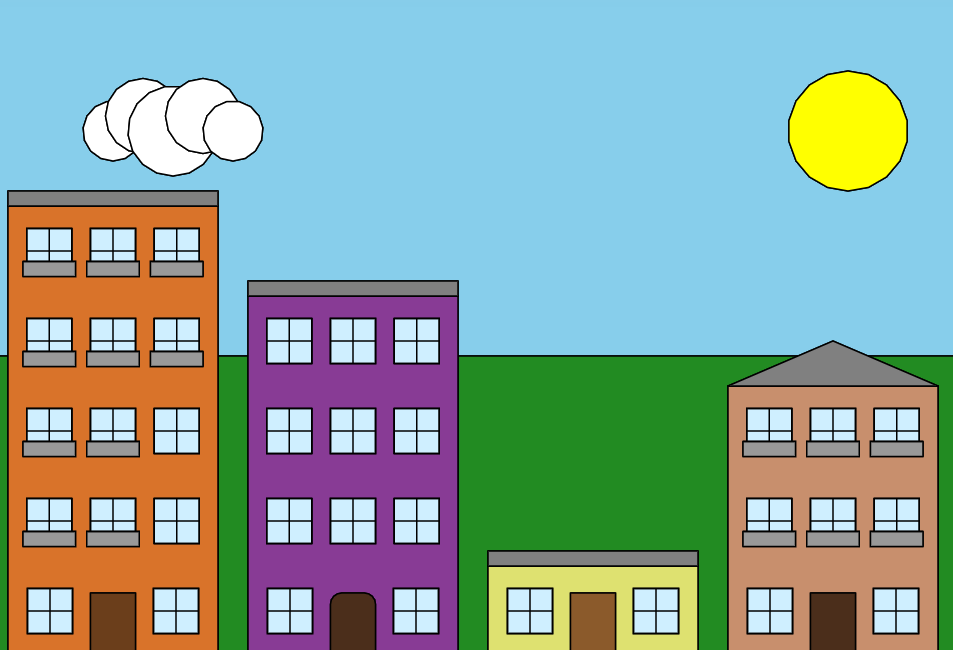

Turtle Immeuble
Code
import turtle
import random
# --- Configuration immeubles ---
BUILDING_WIDTH = 140
FLOOR_HEIGHT = 60
MIN_LEVELS = 1
MAX_LEVELS = 5
GAP = 20
GROUND_Y = -200
# 4 immeubles avec niveaux choisis aléatoirement entre 1 et 5
etages_list = [random.randint(MIN_LEVELS, MAX_LEVELS) for _ in range(4)]
pen = turtle.Turtle()
pen.hideturtle()
pen.speed(0)
pen.pensize(1)
# --- utilitaires ---
def clamp_levels(n):
return max(MIN_LEVELS, min(MAX_LEVELS, int(n)))
def random_color_hex():
r = random.randint(30, 230)
g = random.randint(30, 230)
b = random.randint(30, 230)
return f"#{r:02x}{g:02x}{b:02x}"
def draw_filled_rect(x, y, w, h, color_hex):
pen.up()
pen.goto(x, y)
pen.setheading(0)
pen.down()
pen.fillcolor(color_hex)
pen.begin_fill()
for _ in range(2):
pen.forward(w)
pen.left(90)
pen.forward(h)
pen.left(90)
pen.end_fill()
def draw_triangle(x_left, y_bottom, width, height, color_hex):
pen.up()
pen.goto(x_left, y_bottom)
pen.setheading(0)
pen.down()
pen.fillcolor(color_hex)
pen.begin_fill()
pen.goto(x_left + width/2, y_bottom + height)
pen.goto(x_left + width, y_bottom)
pen.goto(x_left, y_bottom)
pen.end_fill()
def draw_ground_line(total_left, total_width):
pen.up()
pen.goto(total_left, GROUND_Y)
pen.setheading(0)
pen.color("saddle brown")
pen.pensize(3)
pen.down()
pen.forward(total_width)
pen.pensize(1)
pen.color("black")
# --- fenêtres ---
def draw_window(center_x, center_y, win_w=30, win_h=30):
left = center_x - win_w / 2
bottom = center_y - win_h / 2
pen.up()
pen.goto(left, bottom)
pen.setheading(0)
pen.down()
pen.fillcolor("#cfefff")
pen.begin_fill()
for _ in range(2):
pen.forward(win_w)
pen.left(90)
pen.forward(win_h)
pen.left(90)
pen.end_fill()
pen.color("black")
pen.up(); pen.goto(left, bottom); pen.down()
for _ in range(2):
pen.forward(win_w)
pen.left(90)
pen.forward(win_h)
pen.left(90)
pen.up(); pen.goto(center_x, bottom); pen.down()
pen.goto(center_x, bottom + win_h)
pen.up(); pen.goto(left, center_y); pen.down()
pen.goto(left + win_w, center_y)
# --- portes ---
def draw_door(center_x, bottom_y, door_w=30, door_h=42):
door_color = random.choice(["#6b3e1b","#4b2e1b","#8b5a2b","#40220f","#c48b62"])
shape = random.choice(["rect","rounded"])
left = center_x - door_w/2
if shape=="rect":
draw_filled_rect(left, bottom_y, door_w, door_h, door_color)
else:
r = min(door_w*0.25, door_h*0.35)
pen.up(); pen.goto(left, bottom_y); pen.setheading(0); pen.down()
pen.fillcolor(door_color)
pen.begin_fill()
pen.forward(door_w)
pen.setheading(90)
pen.forward(door_h - r)
pen.setheading(90); pen.circle(r,90)
flat = door_w - 2*r
if flat>0:
pen.setheading(180); pen.forward(flat)
pen.setheading(180); pen.circle(r,90)
pen.setheading(270); pen.forward(door_h - r)
pen.end_fill()
# --- balcon ---
def draw_balcony(center_x, bottom_y, bal_w=35, bal_h=10):
left = center_x - bal_w/2
draw_filled_rect(left, bottom_y, bal_w, bal_h, "#999999")
pen.up()
pen.goto(left, bottom_y + bal_h)
pen.down()
pen.color("black")
pen.forward(bal_w)
# --- immeuble ---
def draw_building(x_left, levels):
levels = clamp_levels(levels)
width = BUILDING_WIDTH
height = levels*FLOOR_HEIGHT
facade_color = random_color_hex()
draw_filled_rect(x_left, GROUND_Y, width, height, facade_color)
# --- porte ---
door_w = 30
door_h = int(FLOOR_HEIGHT*0.7)
MARGIN = 10
pos_choice = random.choice(["left","middle","right"])
if pos_choice=="left":
door_center_x = x_left + MARGIN + door_w/2
elif pos_choice=="right":
door_center_x = x_left + width - (MARGIN + door_w/2)
else:
door_center_x = x_left + width*0.5
draw_door(door_center_x, GROUND_Y, door_w, door_h)
# --- fenêtres ---
win_w = 30
win_h = 30
window_positions = []
for i in range(levels):
floor_center_y = GROUND_Y + i*FLOOR_HEIGHT + FLOOR_HEIGHT/2
if i==0:
slots = [0.2,0.5,0.8]
remove_idx = {"left":0,"middle":1,"right":2}[pos_choice]
chosen_slots = [s for idx,s in enumerate(slots) if idx!=remove_idx]
for frac in chosen_slots:
cx = x_left + width*frac
draw_window(cx, floor_center_y, win_w, win_h)
else:
n=3
left_margin = (width - n*win_w)/(n+1)
for k in range(n):
cx = x_left + left_margin*(k+1) + win_w*k + win_w/2
draw_window(cx, floor_center_y, win_w, win_h)
window_positions.append( (cx, floor_center_y - win_h/2) )
# --- balcons aléatoires ---
num_balcons = random.randint(0,len(window_positions))
balcon_windows = random.sample(window_positions, num_balcons)
for wx, wy in balcon_windows:
draw_balcony(wx, wy-2, bal_w=35, bal_h=10)
# --- toit ---
roof_type = random.choice(["flat","triangular"])
if roof_type=="flat":
draw_filled_rect(x_left, GROUND_Y + height, width, 10, "gray")
else:
draw_triangle(x_left, GROUND_Y + height, width, 30, "gray")
# --- décor fixe ---
def draw_background():
# ciel
draw_filled_rect(-400, -200, 800, 600, "#87CEEB")
# herbe
draw_filled_rect(-400, -200, 800, 200, "#228B22")
# soleil
pen.up(); pen.goto(250,150-40); pen.down()
pen.fillcolor("yellow"); pen.begin_fill()
pen.circle(40); pen.end_fill()
# nuage simple
pen.fillcolor("white")
for dx,dy,r in [(-40,0,20), (-20,10,25), (0,0,30), (20,10,25), (40,0,20)]:
pen.up(); pen.goto(-200+dx,150+dy-r); pen.down()
pen.begin_fill(); pen.circle(r); pen.end_fill()
# --- dessin global ---
draw_background()
total_width = len(etages_list)*BUILDING_WIDTH + (len(etages_list)-1)*GAP
start_x = -total_width/2
draw_ground_line(start_x, total_width)
x = start_x
for floors in etages_list:
draw_building(x, floors)
x += BUILDING_WIDTH + GAP
try: turtle.done()
except: pass
Resultat
